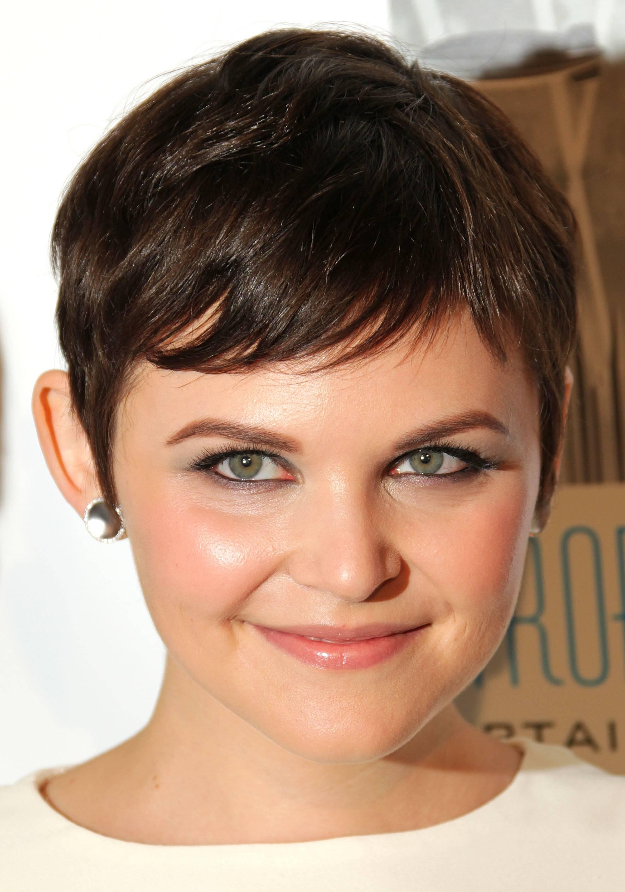

About our staff
Our mission is to provide widest possible choice in the range of sports, increase level of participation and quality method of delivery to strengthen the foundation for growth to support participation and improved elite sport performance, Working together as a team,continually striving for excellence,drawing on best practice and finally to develop the skills and attitudes needed for the intellectual engagement and challenge of in-depth university level study' through sport.


Our objective
To offer a higher-than-usual level of customer service. This is always a priority, but especially for a new restaurant that still has something to prove. Train our staffs to be efficient and effective in serving customers and put a bonus or reward-based system in place as an incentive for an intense focus on pleasing your restaurant's clientele.
How we treat our customer?
Our Staff
(Move the mouse pointer on the image to enlarge it.)
- Martin Flower
- CEO of Food Restaurant
- Contact no : 0759090300
Martin Flower was appointed as the Chief Executive Officer (CEO) of Food Restaurant (R&CA) in 1999. R&CA is the peak industry body representing restaurants, cafes and caterers across Australia. John came to the association from Tourism Training NSW, where he was Executive Officer for five years. He has spent more than 30 years working in the hospitality industry, trained in food and beverage management at the Ecole Hotelliere Lausanne in Switzerland, and holds a Bachelor of Commerce majoring in Business Law. John currently serves as Chair of the Commonwealth Vocational Education and Training Advisory Board and the National Tourism Alliance and is on Prime Minister’s Business Advisory Council, as well as the board of the National Centre for Vocational Education Research.
- Benn Hill
- Vice President of Food Restaurant
- Contact no : 0755440300
Benn Hill is senior vice president and general manager of Fod Restaurant Group. Saik leads the organization that creates Intuit consumer finance products, including Mint, Mint Bills and Quicken with a focus on simplifying everyday financial tasks. Saik previously served as general manager of the company's Grow Your Business division, which included overseeing Intuit Websites and managing its divestiture in 2012.
- Alan Perera
- Accountant of Food Restaurant
- Contact no : 0734665300
A passed finalist of the renowned Chartered Institute of Management Accountants, UK and a thoroughly experienced financial Accountant , who would like to become a CFO in a reputed organization in 10 years. Currently I am working as a Senior Accountant at Food Restaurant Group of companies which engages restaurant industry and catering service.
- Peris Down
- Head Cook
- Contact no : 076775393
Peris Down is most well known for his daily appearances on Good Chef Bad Chef however there is more to Richardson than his television career. Unlike many chefs, Adrian hasn’t always dreamed of being behind the pots and pans. In fact, cooking was used to pay for his flying lessons, as he wanted to become a pilot. However, this dream didn’t last long, as he suddenly found his calling as a chef.
- Andrea Alan
- Head Cook
- Contact no : 077594232
After an impressive international and local career, working at high profile restaurants in Australia and the UK, Andrea Alan has joined The Governors Table Bar & Dining as Head Chef. Barkham recently worked at twin-torqued The Bridge Room following on from Selah in Sydney and the one hatted The Point in Melbourne where he cooked alongside culinary heavy weight chef, Justin Wise.

- Stephanie Stella
- Receptionist
- Contact no : 01124500600
Heading the front of the house operations ensuring the highest level of customer care while leading the team to achieve the organizational goals. Worked as the Front Office Executive, ensuring all the S.O.P s are being followed by the reception staff while assuring expectations are exceeded of all the guests.
Search staff
| Staff name | Position | Contact no |
|---|---|---|
| {{staff.name}} | {{staff.pos}} | {{staff.contact}} |